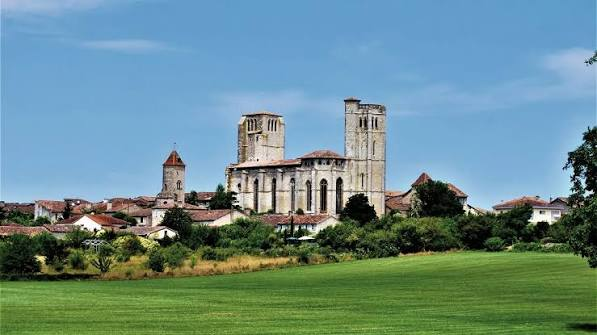

Le nom de La Romieu révèle à lui seul son histoire : il vient du gascon « l'arroumîu », qui signifie « le pèlerin ». Tout commence en 1062, lorsqu'un moine pèlerin de retour de Rome fait halte en ces lieux et décide d'y fonder un prieuré et un hôpital, sur une « sauveté », zone de refuge organisée autour d'une église. Le village se trouve alors sur la Voie Podiensis, l'un des chemins historiques menant à Saint-Jacques-de-Compostelle depuis Le Puy-en-Velay.

La collégiale Saint-Pierre, joyau gothique édifié en seulement six ans
Au XIVe siècle, le village prend une tout autre dimension grâce à l'un de ses enfants, Arnaud d'Aux, devenu cardinal et cousin du pape Clément V. Fort de son influence à la cour pontificale d'Avignon, il fait édifier entre 1312 et 1318, en seulement six ans, la collégiale Saint-Pierre, son cloître gothique et le palais cardinalice qui l'accompagnait, transformant la communauté bénédictine en un collège de quatorze chanoines.
L'ensemble collégial traverse ensuite les épreuves du temps : dégâts causés par les troupes protestantes de Montgomery en 1569, puis nouvelles destructions sous la Révolution. En 1998, la collégiale Saint-Pierre est inscrite au patrimoine mondial de l'UNESCO au titre des « Chemins de Saint-Jacques-de-Compostelle en France » ; le village rejoint ensuite le réseau des « Plus Beaux Villages de France ».
La visite de l'ensemble collégial permet d'aller bien au-delà de la seule église : on découvre le cloître gothique, les deux tours, le chemin de ronde, les jardins et, dans l'une des tours, un remarquable escalier à double révolution aménagé dans un passage étroit. Des peintures murales restaurées sont également visibles dans la sacristie. La Romieu se situe au croisement des GR 65 et GR 652, ce qui confirme son rôle ancien et actuel d'étape jacquaire entre Lectoure et Condom.
Cloître gothique Arcades géminées et jardin, au cœur de l'ensemble collégial
Tour octogonale Escalier à double révolution, l'un des plus vieux d'Europe, et panorama depuis le belvédère
Sacristie Fresques polychromes du XIVe siècle
Jardin de Coursiana Jardin Remarquable, riche d'essences exotiques
Chats de pierre Sculptures disséminées dans les ruelles du village
Chemins de Compostelle Étape sur la Voie du Puy (GR65) et la voie de Rocamadour (GR652)
1
La collégiale Saint-Pierre
Nef unique, deux tours imposantes et fresques de la sacristie : un chef-d'œuvre gothique édifié en six ans à peine.
2
Le cloître gothique
Arcades géminées et jardin intérieur, un havre de calme au sein de l'ensemble collégial.
3
La tour octogonale et son panorama
Montez les 33 mètres par l'escalier à double révolution pour un point de vue sur le village et la campagne gersoise.
4
Le jardin de Coursiana
Ce Jardin Remarquable clôt la visite dans une atmosphère luxuriante, à l'écart de l'agitation du village.
🏆
Reconnaissance & patrimoine
🌍
Patrimoine mondial de l'UNESCO
La collégiale Saint-Pierre est inscrite depuis 1998 au titre des « Chemins de Saint-Jacques-de-Compostelle en France ».
⭐ Label international
🌟
Plus Beaux Villages de France
Le village a rejoint le réseau des « Plus Beaux Villages de France » en 2018, grâce à son patrimoine bâti préservé.
Depuis 2018
🌺
Jardin de Coursiana
Classé « Jardin Remarquable », il abrite une grande variété de plantes et d'arbres, à deux pas de la collégiale.
Label national
🐈
La légende d'Angéline et des chats
La Romieu doit son surnom de « cité des chats » à une légende locale tendrement racontée aux visiteurs. On y conte l'histoire d'Angéline, une jeune orpheline qui, au fil d'une période de disette, se serait attachée à recueillir des chats abandonnés : ces derniers, en tenant les rats à distance des récoltes, auraient contribué à préserver le village de la famine.
Grâce à ses chats, disait-on, la petite Angéline avait su épargner à tout le village les ravages que d'autres endurèrent.
— la légende d'Angéline, telle qu'on la raconte encore à La Romieu
Dans les années 1990, l'artiste Maurice Serreau, alors installé au village, se met à sculpter quelques chats de pierre en hommage à cette légende. Le succès est immédiat : chaque habitant veut désormais le sien, et les chats se multiplient peu à peu sur les façades, les rebords de fenêtres et la place principale, aux côtés des matous bien vivants qui continuent d'arpenter les ruelles.
💬
Le saviez-vous ? Anecdotes roméviennes
🚶
« Le pèlerin » donne son nom au village
Le nom « La Romieu » vient du gascon « l'arroumîu », qui signifie « le pèlerin », en souvenir du moine fondateur revenu de Rome en 1062.
🌀
Un escalier parmi les plus vieux d'Europe
L'escalier à double révolution de la tour de la collégiale figure parmi les plus anciens exemples de ce type d'ouvrage en Europe.
🐱
Des dizaines de chats de pierre
Depuis les premières sculptures de Maurice Serreau dans les années 1990, les chats de pierre se sont multipliés dans tout le village, sur les toits, murets et fenêtres.
📍
Aux alentours
Condom capitale de l'Armagnac, cathédrale Saint-Pierre et caves d'Armagnac, à une trentaine de kilomètres.
Lectoure ancienne cité épiscopale perchée, étape voisine sur les Chemins de Compostelle.
Fourcès unique bastide circulaire du Gers, à environ 25 km.
Larressingle plus petit village fortifié de France, sur la même route des « Plus Beaux Villages » du Gers.